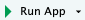

Getting Started
Here is a Shiny app
And not just any app, an app that you will be able to build by the end of this tutorial!
We’ll go through the technical details of each component of such an app throughout the tutorial, but for now let’s take a high level view.
{kind=link}
We have:
- a title for the app,
- a series of inputs:
- some of these inputs use drop down menus for selection,
- some are sliders,
- some allow for text input, and
- some are action buttons
- and a few outputs:
- a plot output that the user can interactively update,
- a text output that updates alongside it, and
- a data table output that also updates alongside these.
As much as it looks like there is a lot going on in this sample app, the app doesn’t even scratch the surface of what you can build with Shiny.
I hope you’re excited to take it all in!
Background
Before we get started with Shiny, let’s talk background…
This tutorial assumes that you are familiar with R as a programming language.
Additionally, this tutorial uses packages from the tidyverse (e.g. dplyr for data wrangling and ggplot2 for data visualisation). Your Shiny apps can use any package, but if you’d like to learn more about doing data science with the tidyverse, see here.
Help
The tutorial is designed for beginners and many of the exercises have plenty of scaffolding to help you along the way.
That being said, there are a few other resources that might help your learning.
The Shiny cheatsheet is a handy-dandy resource that we recommend you keep close by when building Shiny apps.
The book Mastering Shiny by Hadley Wickham is available online and is incredibly helpful and thorough.
This website’s Articles section is the most comprehensive knowledge base about all things Shiny and to keep up to date with it as it evolves.
Tips
Also, let’s go over three very important tips for learning to develop Shiny apps:
Always run the entire script containing the R code, not just up to the point where you’re developing code. For most exercises in this tutorial you will be asked to modify or update existing Shiny code, and even though you might be altering a small portion of the code, you still need to run the entire app code to create the app.
Sometimes the best way to troubleshoot is to run the app and review the error. Not only can the error message be informative, but googling the error message might quickly land you on a solution.
Watch out for commas! This will mean more as you start to learn Shiny, but just keep in mind, a Shiny error can often be caused by a missing comma. Thankfully, the RStudio IDE will alert you to most of these missing comma or similar syntax errors, like the one shown below.
{kind=link}
Anatomy of a Shiny app
Alrighty, let’s take a look at the anatomy of a Shiny app:
{kind=link}
Start by loading the package shiny. Load any other packages you need for the app.
Lay out the user interface with a ui object . This will control the appearance of the app.
Define the server function that contains instructions needed to build the plots or the outputs.
End the app with a call to shinyapp() function. This will put ui and server components together to create the shiny app.
Data
In this tutorial we will build a simple movie browser app.
We will use the movies dataset, which combines data from two websites: the Internet Movie Database, commonly known as IMDB, and Rotten Tomatoes. The observations are a random sample of 651 movies released in the US between 1970 and 2014.
So where does the loading of the data happen in an app?
Revisit
Let’s revisit the app layout from a couple sections back.
{kind=link}
We load the data before ui and server definitions so that it can be used in both.
Alright, time for some practice!
Which of these is not generally a part of the Shiny app architecture?
- A function that installs an R package
- User interface
- Server function
- A function that creates Shiny app objects
Practice: First peek under the hood
Below you can see the complete code to reproduce the app we introduced in the previous section. You can use this code to interact with the app yourself, and make small adjustments to it.
There are two ways to work with this code:
We’ve created a Posit Cloud Project for you to test drive this code. The scripts and data are already there!
Click the button Go to Posit Cloud Workspace
Select 1.1 First peek under the hood from the Project list
Follow these Practice instructions to get started!
Create a new project in your local RStudio IDE and copy the code from these pages into the R script.
Open RStudio IDE
Create a new R project. Select ‘New Directory’ and then use ‘Shiny Application’
Give your project a name like “example-shiny-app”
A file
app.Rwill open with code about “Old Faithful Geyser Data”Delete the code in that file
Copy the code below and paste it into that file instead
Save the file as
app.RFollow these Practice instructions to get started!
Use or copy this code
# Load packages
library(shiny)
library(bslib)
library(ggplot2)
# Get the data
file <- "https://github.com/rstudio-education/shiny-course/raw/main/movies.RData"
destfile <- "movies.RData"
download.file(file, destfile)
# Load data
load("movies.RData")
# Define UI
ui <- page_sidebar(
sidebar = sidebar(
# Select variable for y-axis
selectInput(
inputId = "y",
label = "Y-axis:",
choices = c("imdb_rating", "imdb_num_votes", "critics_score", "audience_score", "runtime"),
selected = "audience_score"
),
# Select variable for x-axis
selectInput(
inputId = "x",
label = "X-axis:",
choices = c("imdb_rating", "imdb_num_votes", "critics_score", "audience_score", "runtime"),
selected = "critics_score"
)
),
# Output: Show scatterplot
card(plotOutput(outputId = "scatterplot"))
)
# Define server
server <- function(input, output, session) {
output$scatterplot <- renderPlot({
ggplot(data = movies, aes_string(x = input$x, y = input$y)) +
geom_point()
})
}
# Create a Shiny app object
shinyApp(ui = ui, server = server)Your turn
Once you have the file
app.Ropen locally or on Cloud, click  to run the code and generate the app.Play with the input selectors for the Y-axis and the X-axis and observe how the output changes.
Close the app by closing the pop-up window or clicking on the red Stop button in the viewer.
Locate the relevant lines of code in
app.Rthat build the selector widget for the Y-axis. This is in aselectInput()function starting around Line 20, underneath the comment# Select variable for y-axis. Note that this function takes four arguments:inputId,label,choices, andselected. We’ll discuss what each of these mean in detail shortly. For now, change theselectedargument toimdb_rating, save your changes, and run the app again by clicking on . What changed?
If you get an error when you try to rerun the app, you can either try to debug the issue by tracing back your steps or delete everything in app.R and copy and paste the code above into app.R. This will get you back to your starting point. You can use this “start over” approach for any of the exercises in this tutorial.
- Now locate the relevant lines of code in
app.Rthat build the selector widget for the X-axis. This is also in aselectInput()function, starting around Line 27, underneath the comment# Select variable for x-axis. Change theselectedargument toimdb_ratingas well, save your changes, and run the app again. What changed?